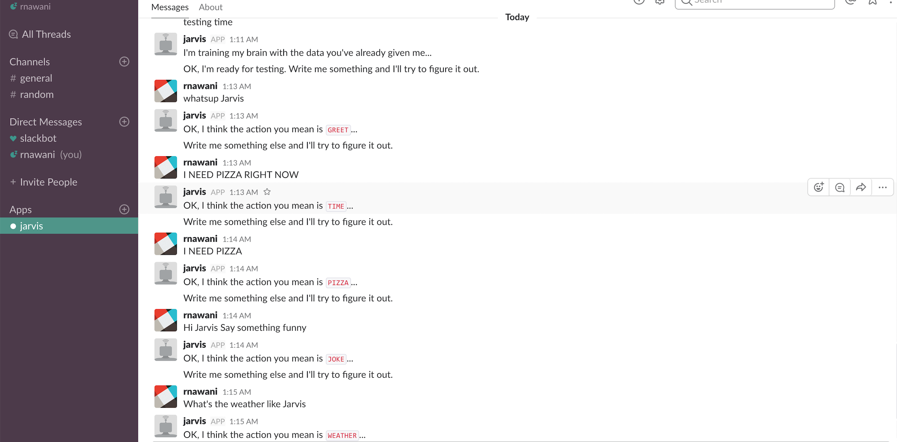

hide forever |
hide once
hide forever |
hide once
Slack provides a wonderful web API for chatbots to interact with team members.
I implemented a Python "websocket" application that connects with the API and collect data from
conversation with team members. The websocket application works by sitting quietly and waiting
for data from Slack’s RTM API (Real-Time Messaging). These data include the text of messages
and lots of other events, such as “The user is typing…”.
My project was to simply train my little slackbot, Jarvis , to classify
text data and eventually separating useful messages (that I care about) from the messages that I care less
about. I started by traing Jarvis with text data and a small sample of classifiers.

This is not the most useful bot but HEY at least Jarvis understands me more than my fish. This project can be used
to organise your slack group messages in whatever way you prefer as long as you are able to implement the
logic.
#Jarvis4Life
For more detail, check out my code